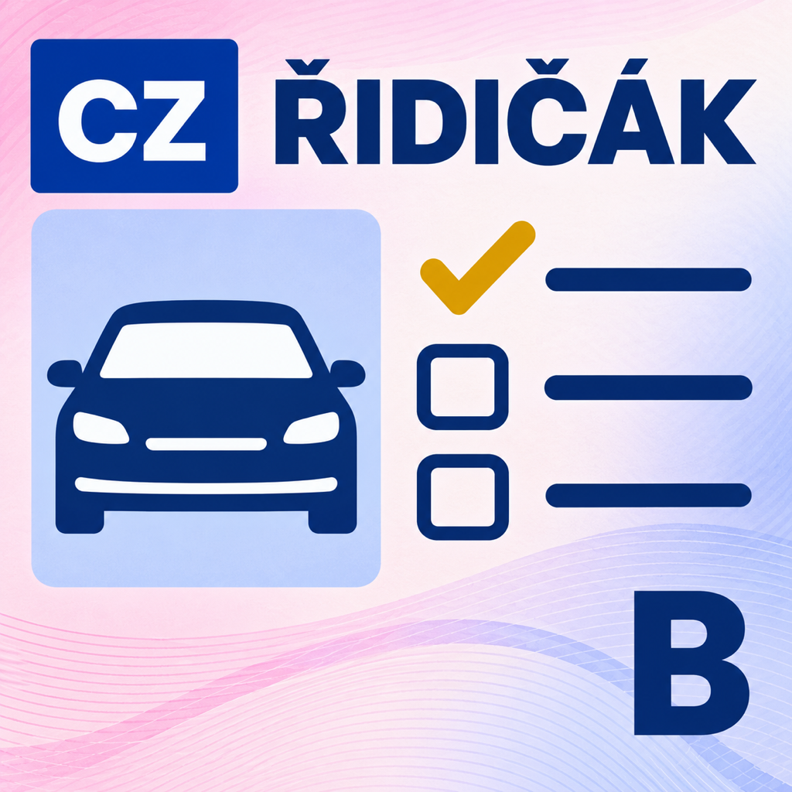
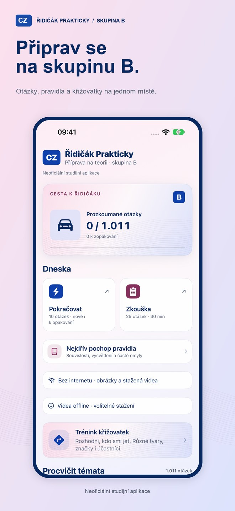
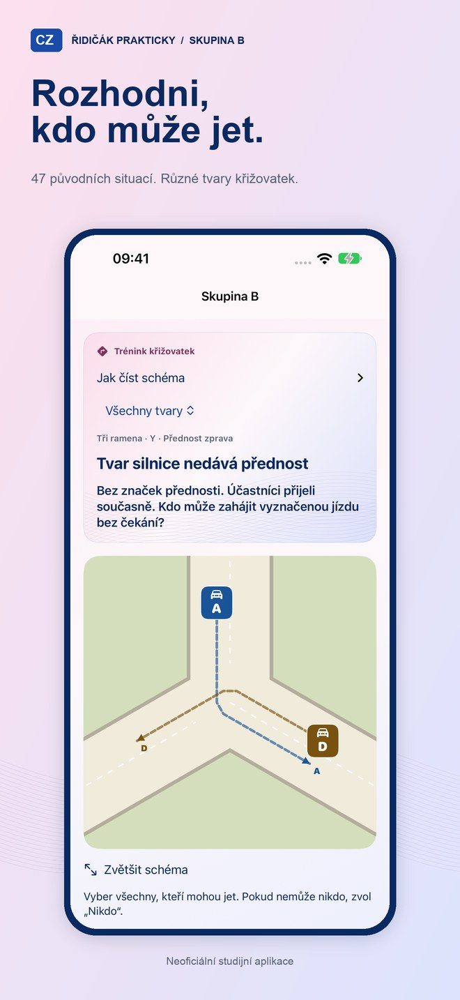
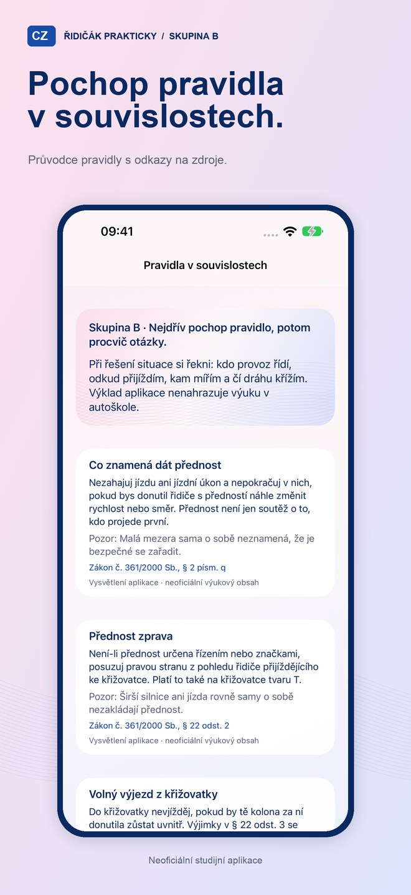
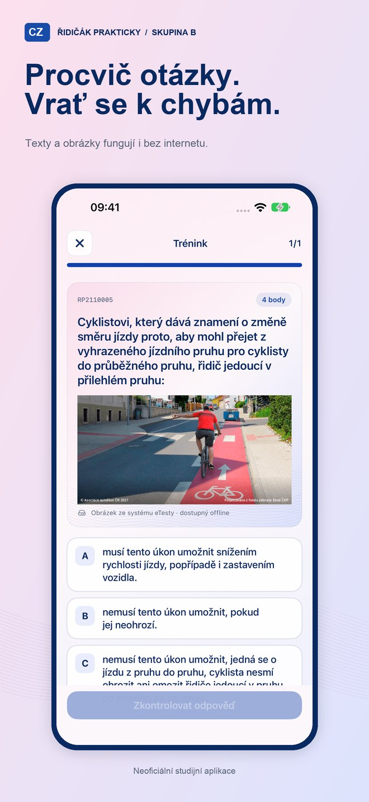
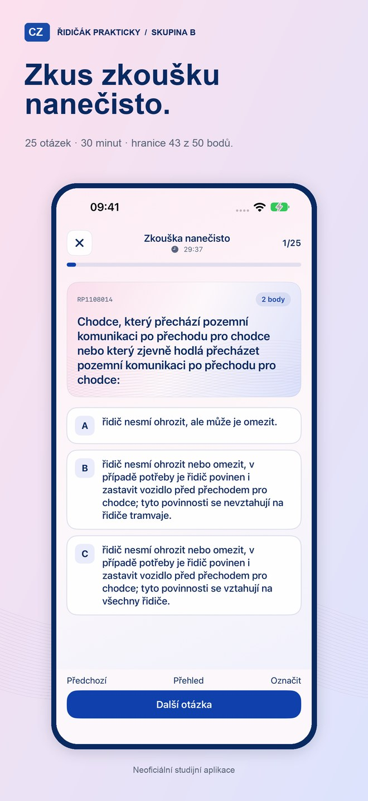
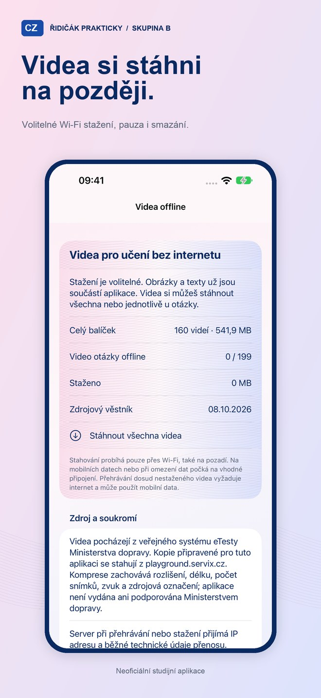

Učení po malých krocích
Krátké tréninky, průchod tématy, návrat k chybám a místně uložený postup.

Česká příprava na teoretickou zkoušku skupiny B pro iPhone. Otázky, opakování a křižovatky, ve kterých záleží na pravidlech i na skutečném tvaru silnice.
Připravujeme vydání v českém App Store. Aplikace je zdarma a určená pro iPhone s iOS 18 nebo novějším.
Podpora a časté dotazyOdkud pocházejí otázkyKrátké tréninky, průchod tématy, návrat k chybám a místně uložený postup.
25 otázek, 30 minut a bodová hranice 43 z 50. Otázky lze označit a před odevzdáním se k nim vrátit.
T, Y, šikmá a odsazená napojení, hlavní v zatáčce i kruhové objezdy. Vyznačené dráhy a vysvětlení přednosti.
Bez účtu, reklamy a analytického sledování. Texty, obrázky a GIFy fungují offline. Videa si lze volitelně stáhnout přes Wi-Fi; do té doby jejich přehrávání potřebuje internet.






Studijní průvodce vysvětluje časté omyly. U vybraných otázek najdete vlastní komentář aplikace oddělený od původního znění. Podrobný rozbor umožní znovu otevřít obrázek nebo video.
Neoficiální studijní aplikace. Není vydána ani podporována Ministerstvem dopravy ČR. Nenahrazuje autoškolu, praktický výcvik ani oficiální zkoušku. Toto vydání je určeno pouze pro skupinu B.